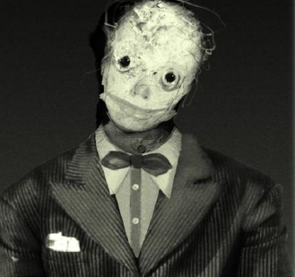
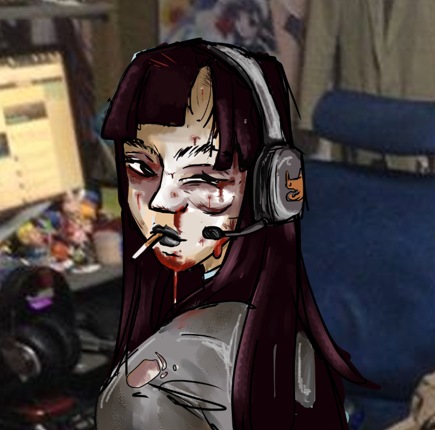
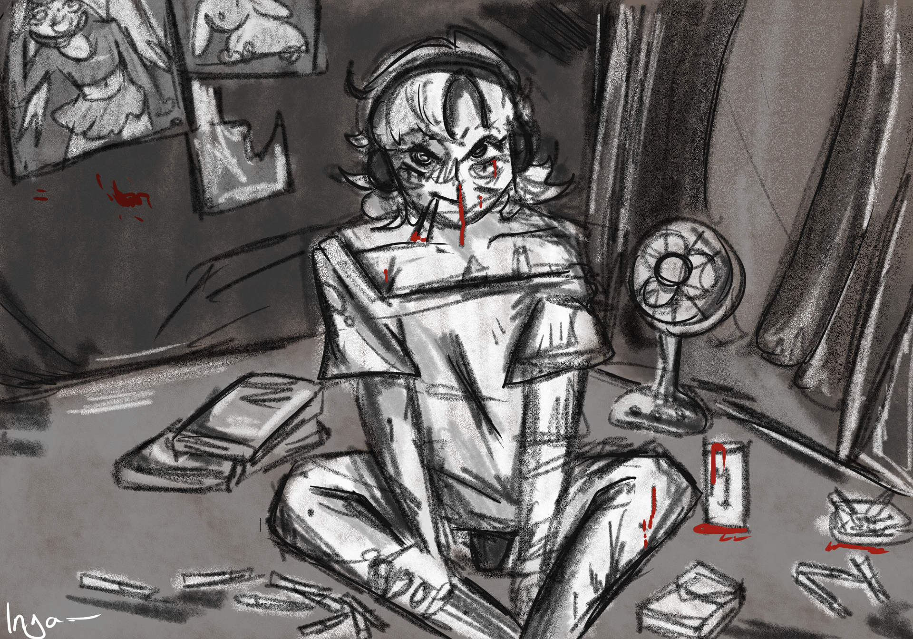

Inga
Inga
Les bonnes personnes meurent en premier, autant etre un connard.
Information connue
Un monticule de cigarettes recouvre des boîtes en plastique suintant un liquide brunâtre. L'odeur semble insoutenable, ou du moins c'est ce qu'on imagine à travers l'image fade et désaturée de sa webcam. En y prêtant attention, on distingue qu'un des tupperwares est encore estampillé d'un panda souriant aux yeux caricaturaux, vestige d'une entreprise disparue en 2004.
La crasse et la moisissure recouvrent les murs de son appartement, et la Nosferatu ne détonne aucunement dans le décor. Une femme recluse, au visage boursouflé, les cheveux collés par du sang séché. Les rares personnes qui l'ont rencontrée parlent d'une odeur d'excréments, de tabac froid et de chair morte.
Impossible d'attribuer ce mode de vie à son seul clan lorsqu'on le compare au premier infant de son sire, Nebetta, toujours impeccable, toujours élégante.
Pourtant, derrière cette apparence misérable, Inga est probablement l'un des membres les plus indispensables de la Camarilla d'Izmir.
Histoire
Inga est née dans une famille arménienne ayant survécu aux massacres et au Grand Incendie de Smyrne.
Son père devint obsédé par la mémoire. Il voulait écrire, pour qu'on se souvienne de sa famille, de ses coutumes, de l'olivier sous lequel ils déjeunaient chaque dimanche, du rire de son cousin. Qu'on se souvienne d'eux comme des etres humains, massacré sans raison. Cependant les manuscrits furent saisis, interdits ou disparurent. À mesure que les années passaient, il devint évident pour Inga que l'histoire oublierait les siens comme elle en avait oublié tant d'autres.
Bien trop rapidemene, ils moururent tout deux, et le destin lui donna raison, quand elle se retrouva seule face au prètre pour leur enterrement.
Ce n'est que le lendemain matin qu'elle découvrit que quelqu'un avait déposé une enveloppe sur la tombe. Celle ci contenant une copie de tous les manuscrit de son père, ainsi qu'une note, "La mémoire survivra aussi longtemps que moi."
La décrépitude
Les bons combats ne font pas forcément de bonnes personnes.Suite à cet évenement, l'on commença à entendre parler d'elle, chez les humains et dans la cour. Elle participa à la première cyberattaque sur le gouvernement en 2001, et commit plusieurs actes de haute trahison en faveur de la cause grecque.
Son dernier fait d'arme, est le piratage du réseau anarch, et l'archivage de plusieurs de leur conversations.
Relations
Lignée

Atam- Les conditions d'étreinte de Inga sont connue uniquement entre lui et Kushi.
- NEET
- Inga ne possède aucun amis, et uniquement des relations profesionelles avec le Hérault et Essil, qui cherchent ses services dans l'obtention d'information sur la sécurité de la ville.
Trivia
- Elle possède des chats qu'elle délaisse, et qui vivent de canibalisme et meurent dans son appartmeent.
- La creepypasta de jeff the killer est un edit de son visage qu'elle à posté sur 4chan à l'époque.
- Elle communique exclusivement par appel vidéo.
Canon

Autoportrait
